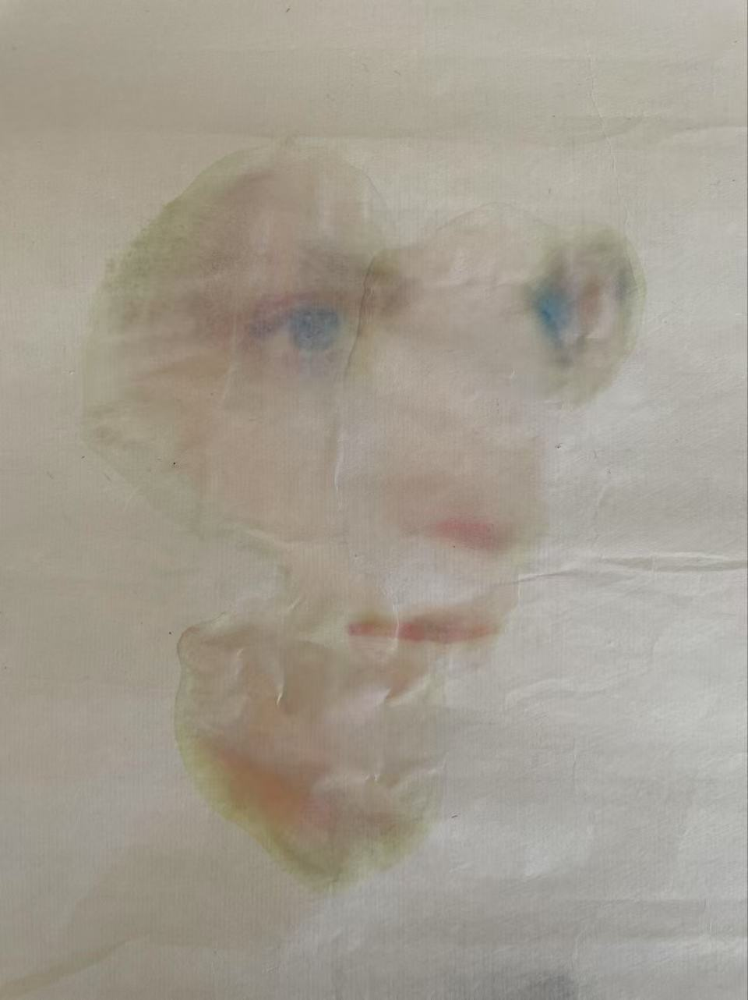

These two events could be motivated by the same desire.
I think there is a natural longing in all of us to participate in the things we perceive. This participation turns more passive perception into an experience, often by providing amusement or emotional value. We of course remember the day we flirted exhilaratingly with our third-grade crush more than our introduction to fractions.
When faced with beauty, we prefer it when our perspective is a crucial part of that encounter. This special class of beautiful things, which elicit chatter, controversy, and participation, exists primarily in objects we would not initially call beautiful at all.
My paper is about how the things that we find the most beautiful are not exactly conventional, because it is often imperfections that encourage us to participate with our perspective.
Two things about seeing are worth borrowing from the first essay of John Berger's popular collection, Ways of Seeing.1 First, the act of seeing more or less involves a choice. Here I will clarify that my reading of Berger is that we can still receive sensory data passively or absentmindedly, but when we are consciously looking at something we are active and liable. The agency invoked when we look is the beginning of what I call participation in the act of seeing.
The question provoked is: how can participation be encouraged?
Secondly, what we see is in a close and curious relation to what we know and who we are. At the height of our participation in seeing, "we are always looking at the relation between things and ourselves." This phenomenon would be impossible without what I will call perspective. A perspective entails a certain subjectivity. When invoked in an act of seeing, perspective turns it from a one-way event into a relationship.
This is Giorgio de Chirico's 1914 Mystery and Melancholy of a Street. I recall looking at it on my computer screen and bringing to it the perspective of someone stranded at home in the midst of the pandemic. It was moving and relatable in a way I cannot replicate anymore - even the title had a different ring to it back then.
That is a little example of meaningful participation.
To participate is to bring a certain perspective. The stronger the perspective, the more you participate in the act of seeing.
The question now becomes, how can something encourage participation particularly by emphasizing or creating a certain perspective?
Chirico certainly didn't give me the context of the pandemic. It is accidental that his art should have so fittingly captured that prevailing physical and mental state of the world. Sure, you could call him lucky. Or maybe his craft is just in creating something with the potential to be universally relatable - the yearning we find when motion clashes with stillness, or that lonely mood Edward Hopper also evokes. Somehow, though he did not release the virus, Chirico has long been complicit in the creation of a perspective that, like mist, envelops his art. And from the title we certainly know that a lens of mystery and melancholy was his intention.
Let us return to exploring what we find beautiful, and how some beautiful things gain aesthetic meaning through our participation with it.
There are certain things so beautiful that you cannot help but feel, intuitively, that their beauty would persist even if you did not perceive it, or even if no one perceived it at all. It is both impossible and unnecessary to anatomize its beauty with language. They seem to trigger something in us that we take for granted. I call these things conventionally beautiful.
Consider Michelangelo's David.
No further discussion of his beauty is required for the layman viewer. It has become so hailed as beautiful that he feels it has defied the subjectivity of beauty. It's as if the sculpture has the same aesthetic value in the objective world of things and the subjective world of perception.
But that is not the kind of beauty I want to discuss. Rather, I want to propose a new kind of beauty, even a new class of subliminal things, which are not granted to be beautiful, but explicitly seen to be beautiful. Beautiful objects which, without perspective, would be utterly unremarkable.
I want to write about how different art forms create these objects through an emphasis on perspective.
The Red Wheelbarrow
so much depends
upon
a red wheel
barrow
glazed with rain
water
beside the white
chickens
In this William Carlos Williams poem, the wheelbarrow's meaningful existence depends entirely on perspective. The subject of the poem is not so much the wheelbarrow but the speaker's experience of it. The beginning notion of dependency immediately signifies the attachment of human perspective and feeling. There is an unshakable feeling that the wheelbarrow is explicitly being seen. And this feeling intensifies with Williams' many subtle uses of the pathetic fallacy. "Glazed" stands out as an adjective. While the notion of "beside" as indicative of spatial relations seems natural enough, considering something "glazed" feels too aesthetically-driven to not be the result of human perception. When we read the poem, we see the wheelbarrow from Williams' perspective, which he has so graciously lent to us.
In this way, Williams turns the wheelbarrow into something beautiful without relying on conventionally beautiful language-without rhymes, repetition, certain adjectives or complex phrases. His language is instead careful and attentive, conveying the attentiveness of his experience that alone can make something like a wheelbarrow so sublime.
Winged Victory presents another function of participation. While in Williams' case it turned something mundane to something beautiful, here we are faced with something deformed. Now perspective is encouraged by imperfection, not ordinariness.
Crucially, the head and arms of the statue are missing and have never been found. One may argue that it is precisely these deficiencies that make the sculpture so striking. Its garment and wings appear in motion despite being so incapacitated.
Somehow, Winged Victory modifies our naturally-given perspective as living human beings with our heads and limbs attached, so that when we face her we no longer take our biology for granted. We can see our ableness in a new light. She stirs in us an awe for potential. And as we hold her to a high esteem for her perseverance she becomes more than the goddess of victory. Headless, Nike is a symbol of earthly strength.
Andy Warhol's Brillo Boxes are exact replicas of Brillo's commercial packaging for their soap pads. They are constructed out of plywood, not cardboard.
In being so unashamed and audacious, Warhol draws out the art critic and theorist in us all. Most conceptual art induces reactions like this. The beauty at hand is intellectual. By daring us to doubt, we are all forced to engage in the controversy of this artwork. We can hardly help but ask how is this art? At what point did it become art? And even as we walk past the exhibit sighing at what the art world has now become we find ourselves unable to forget the intellectual exasperation or delight we experienced.
The three art pieces encourage participation. And what they all have in common, from the mundane to the damaged, is a certain amount of relatability to ourselves. That isn't to say winged women are at all familiar to us, only her deficiencies make her less god-like and more mortal. If she were as divine as intended, she would be perfectly inaccessible. In having the capacity to be personal, they become personable. This is the most foundational kind of participation an art piece can encourage.
And in contrast to the things that are conventionally beautiful, so much that they can appear stale to us, the freedom in our act of looking is amplified by our choice to look at something ordinary, and finding excitement not just in them but in ourselves. For as we experience these things, we confront a relationship between them and ourselves. They are meaningful in such-and-such ways only because so-and-so are significant to us.
Let's return to the everywoman desire for ugly men. The same thought is applied here.
We like it when "her body is unreal," but when it is really unreal, it becomes foreign. The thought of touching it is slightly discomforting. But we still appreciate it like we do David. In some cases we even pursue a sex symbol, someone representative of attractiveness on society's scale, probably to make ourselves feel valuable. But in doing so we often forgo our aesthetic preference. We forgo the part of us that wants to rebel against the geometrically perfect, against precision, in exchange for personal, endearing beauty we can participate in.
1 Berger, John. 1972. Ways of Seeing. London: Penguin.